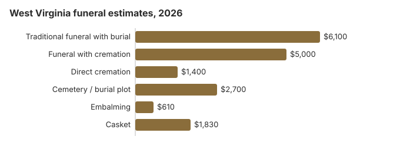

Funeral Costs in West Virginia: What Families Pay in 2026
On our 2026 estimates a traditional West Virginia funeral comes to about $6,100 and a direct cremation to about $1,400. Most of the $4,700 between them is embalming, a casket, the viewing and the service itself, and a burial adds a cemetery plot near $2,700 on top. Below we take each charge in turn and show where the state, the county and the VA can help.
West Virginia Funeral Charges, One by One
Here is what each piece of a West Virginia funeral is likely to cost. The Board of Funeral Service Examiners licenses homes but leaves their prices alone, so expect real quotes to wander around these figures.
| What you buy | Estimate | Typical range |
|---|---|---|
| Traditional funeral with burial | $6,100 | $4,575 – $7,930 |
| Funeral with cremation | $5,000 | $4,000 – $6,500 |
| Direct cremation | $1,400 | $980 – $1,960 |
| Cemetery / burial plot | $2,700 | $1,350 – $5,400 |
| Embalming | $610 | $500 – $1,500 |
| Casket | $1,830 | $610 – $4,880 |
About these numbers: we did not survey West Virginia funeral homes for this table. The lines are our modelled estimates, useful for budgeting but not a quote or professional advice; our method and disclaimer explain the limits.
State sources: W. Va. Code § 9-5-18; WV Funeral Home Director Handbook (Indigent Burial); W. Va. Code §30-6-21.

Who Helps Pay in West Virginia
- Money the family hands the funeral home is counted against the $1,000, so a generous family contribution can wipe out the state payment.
- The funeral home normally tells Social Security about the death, but the spouse or child must still claim the $255 by calling 1-800-772-1213 within two years.
- For a veteran, the person who paid files VA Form 21P-530EZ. When a death on or after October 1, 2026 was not service-connected, the VA pays up to $1,032 for burial and another $1,032 for a plot (our veteran burial benefits guide has the details).
- Medicaid, church and charity help for West Virginia families are covered in the funeral payment assistance guide and how to pay for a funeral with no money.
Educational Resources
- Funeral Consumers AllianceIndependent nonprofit consumer advocacy for funeral rights
- FTC Funeral RuleThe federal rule protecting funeral consumers
- Funeral Insurance GuideCompare final expense and burial insurance options
- Best Burial Insurance CompaniesSide-by-side comparison of top burial insurance providers
- Payment Assistance GuideGovernment programs and financial help for funeral costs
- Insurance Plan ComparisonCompare coverage, premiums, and payout speed across providers
Compare Funeral Costs
- Average Funeral Cost in 2026National cost breakdown with real prices
- Cremation vs. Burial Cost ComparisonSide-by-side price comparison to help you decide
- Funeral Cost BreakdownEvery line item explained: know what you're paying for
- Cheapest Funeral OptionsLower-cost alternatives, with typical price ranges
- Direct Cremation: Most Affordable OptionNFDA 2023 median $2,645 with a family-supplied container (latest available)
- How to Compare Funeral PricesStep-by-step guide to getting the best price
Cremate or Bury in West Virginia?
Cremation
- About $1,400 direct
- About $5,000 with a service
- No grave to buy
- Ashes can be kept, buried or scattered
- 48% of West Virginia families choose it
Traditional Burial
- About $6,100 for the funeral
- About $2,700 for a plot
- Most cemeteries ask for a vault or liner
- A grave the family can visit
- Metal caskets: $2,500 US median (NFDA 2023 General Price List Study); West Virginia sellers vary
West Virginia Cremation and Burial Pages
Two follow-up West Virginia pages:
Cremation Costs in West Virginia
Just under half of West Virginia families, 48%, now cremate. Prices start near $1,400 direct and reach $5,000 with a service; urns and scattering rules are covered too.
Burial Costs in West Virginia
Plot (about $2,700), casket, vault, marker and grave opening together bring a West Virginia burial to $13,560-$18,060.
West Virginia Prices by Town
Our estimates for West Virginia's larger towns:
The Funeral Rule in West Virginia
A West Virginia home that breaks the federal rule can be reported at ftc.gov, and the Funeral Consumers Alliance answers questions free.
Cheaper Ways to Hold a West Virginia Funeral
| Arrangement | About | Covers |
|---|---|---|
| Direct cremation | $1,400 | Cremation alone, without a service; the coroner or medical examiner issues the permit and there is no waiting period (W. Va. Code 30-6-21). |
| Direct burial | $3,050 | A prompt, unembalmed burial with no viewing; the cemetery bills the grave and its opening on top. |
| Green burial | $3,355 | A shroud or simple casket, no embalming and no vault, if the cemetery accepts it. |
| Cremation + memorial | $5,000 | Cremation first, gathering later |
| Traditional funeral | $6,100 | Viewing, funeral and burial |
Why West Virginia Prices Differ
At $6,100 our West Virginia estimate sits well under the $8,300 US median, in line with prices across the South. Homes in and around Charleston usually quote 10-30% more than those in the small towns of the coalfields and the Eastern Panhandle.
With 48% of families now cremating, cremation-only providers have had to sharpen their prices in the larger towns.
Extra Charges on West Virginia Bills
The surprises on a West Virginia bill tend to be the same few add-ons.
- Embalming presented as a legal must. West Virginia law almost never requires it, so ask the home to name the rule.
Chains and Family Homes in West Virginia
Some West Virginia counties now have chain-owned homes that charge more, while in others a family firm that has buried the town for generations still sets the going rate. Knowing which you are dealing with helps you judge a quote.
Arranging a West Virginia Funeral
- Pick cremation or burial first: cremation in West Virginia or burial in West Virginia.
West Virginia death certificates: $12 a copy
The Vital Registration Office in Charleston issues certified copies at $12 each, a fee that covers a search of the year given plus the years either side. A wider search costs another $12 for each three-year span, and the fee is not returned if nothing is found (WV Vital Registration, certificate requests; checked October 29, 2026).
- Same day: the walk-up counter at 350 Capitol Street, Room 165, Charleston, usually fills an order while you wait. Cards are taken there with a 4% surcharge; cash, checks and money orders are not surcharged.
- By mail: send the application, a color copy of photo ID and a check or money order to Vital Registration at that address. Online orders go through VitalChek, which adds its own fee, though the state's share stays $12.
- Who qualifies: the informant on the certificate, the spouse, parents and grandparents, adult children, grandchildren and siblings, and legal representatives. Death records open to the public once they are 50 years old.
Since March 2025 the state issues certified copies even while the cause of death is still listed as pending, so an autopsy no longer holds up the bank or insurance paperwork. Because every copy costs the same, order what you need at once: six copies are $72.
West Virginia's board, the Indigent Burial program and veterans cemeteries
Funeral directors and funeral homes in the state answer to the West Virginia Board of Funeral Service Examiners. Its office at 304-558-0302 confirms a license and takes complaints, including from a family whose funeral home will not give out a price list.
No West Virginia law forces a family to use a funeral director for every step; the Funeral Consumers Alliance leaves West Virginia off its list of nine restrictive states, so you can buy only the services you choose. A cremation needs a permit from the county medical examiner or coroner, but there is no set number of hours to wait (W. Va. Code 30-6-21).
Indigent Burial: up to $1,000
The state's Indigent Burial program pays a funeral director up to $1,000, and that can cover a direct cremation. The first $1,200 drawn from the person's own resources or paid to the funeral home by the family does not count against it; between $1,200 and $2,200 the excess comes off the $1,000, and once the total reaches $2,200 the state pays nothing (W. Va. Code § 9-5-18). The funeral home files form DFA-BU-1 with the local DoHS office, and it must arrive within 30 days of the burial or cremation. (Source: W. Va. Code § 9-5-18; WV Funeral Home Director Handbook (Indigent Burial).) Our $6,100 average makes plain how little Social Security's $255, limited to a surviving spouse or child, does on its own.
Veterans
West Virginia National Cemetery near Grafton (304-265-2044) is reserved by the funeral home, which calls the VA's National Cemetery Scheduling Office on 800-535-1117. The Donel C. Kinnard Memorial State Veterans Cemetery at Dunbar (304-746-0026) is run by the state, and families contact it themselves.
A West Virginia to-do list
- Lay the printed price lists of two West Virginia homes side by side and compare them line by line.
- To save on embalming and a viewing, hold the memorial after the cremation or burial.
- Make sure DFA-BU-1 reaches DoHS within 30 days if you expect Indigent Burial help.
- For a veteran, weigh a grave at Grafton or Dunbar against buying a private plot.
- Note 304-558-0302 in case a home will not stand by its price list.
Frequently Asked Questions
How much is a West Virginia funeral in 2026?
Around $6,100 for a traditional service, 27% under the $8,300 national figure. A service with cremation comes to about $5,000 and a direct cremation to about $1,400, and a burial adds roughly $2,700 for the plot. The first home you ring is not necessarily the cheapest, so get more than one price.
How much does cremation save in West Virginia?
By at least $4,700. Direct cremation is about $1,400, while a traditional funeral with burial is about $6,100 before the plot and vault are counted.
What rights do I have with a West Virginia funeral home?
The federal Funeral Rule entitles you to an itemized price list, prices over the phone and the right to turn down anything you do not want. The Board of Funeral Service Examiners (304-558-0302) licenses West Virginia homes and handles complaints.
How can a West Virginia family spend less?
Collect price lists from two or three homes and compare them line by line; that alone often saves $1,000 or more. Direct cremation, about $1,400, costs least, and a veteran can be buried at no charge at Grafton or Dunbar.
Does West Virginia require embalming?
Cremation in West Virginia runs through W. Va. Code §30-6-21, which spells out paperwork families often learn about late. Written permission must be given on the board's standard form, and a permit must come from the county medical examiner or coroner; if neither is available, the chief medical examiner issues it. A crematory may cremate only one body at a time and may not commingle remains. None of this requires embalming, and the FTC Funeral Rule forbids a home from claiming it is required by law when it is not. For a license check or complaint, call the West Virginia Board of Funeral Service Examiners at 304-558-0302.
Are West Virginia funerals cheaper than elsewhere?
Cheaper. Our $6,100 traditional figure is 27% below the $8,300 national median, a gap typical of the South.
What is the cheapest West Virginia funeral?
Direct cremation, at about $1,400, covering collection, the cremation and the return of the ashes. If you want a grave, direct burial costs about $3,050 before the cemetery's charges; there is no viewing or ceremony, and it is the cheapest way to bury.
How do I find a low-cost West Virginia funeral home?
Phone three homes and ask for the direct cremation and immediate burial prices. You may bring a casket or urn bought elsewhere, and the home may not charge you for doing so.